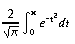
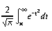

std.math
- const real E;
- e
- const real LOG2T;
- log210
- const real LOG2E;
- log2e
- const real LOG2;
- log102
- const real LOG10E;
- log10e
- const real LN2;
- ln 2
- const real LN10;
- ln 10
- const real PI;
- π
- const real PI_2;
- π / 2
- const real PI_4;
- π / 4
- const real M_1_PI;
- 1 / π
- const real M_2_PI;
- 2 / π
- const real M_2_SQRTPI;
- 2 / √π
- const real SQRT2;
- √2
- const real SQRT1_2;
- √½
- real abs(real x);
long abs(long x);
int abs(int x);
real abs(creal z);
real abs(ireal y); - Calculates the absolute value
For complex numbers, abs(z) = sqrt( z.re2 + z.im2 ) = hypot(z.re, z.im).
- creal conj(creal z);
ireal conj(ireal y); - Complex conjugate
conj(x + iy) = x - iy
Note that z * conj(z) = z.re2 - z.im2 is always a real number
- real cos(real x);
- Returns cosine of x. x is in radians.
Special Values x cos(x) invalid? NAN NAN yes ±∞ NAN yes
BUGS:
Results are undefined if |x| >= 264.
- real sin(real x);
- Returns sine of x. x is in radians.
Special Values x sin(x) invalid? NAN NAN yes ±0.0 ±0.0 no ±∞ NAN yes
BUGS:
Results are undefined if |x| >= 264.
- creal sin(creal z);
ireal sin(ireal y); - sine, complex and imaginary
sin(z) = sin(z.re)*cosh(z.im) + cos(z.re)*sinh(z.im)i
If both sin(θ) and cos(θ) are required, it is most efficient to use expi(&theta).
- creal cos(creal z);
real cos(ireal y); - cosine, complex and imaginary
cos(z) = cos(z.re)*cosh(z.im) + sin(z.re)*sinh(z.im)i
- real tan(real x);
- Returns tangent of x. x is in radians.
Special Values x tan(x) invalid? NAN NAN yes ±0.0 ±0.0 no ±∞ NAN yes
- real acos(real x);
- Calculates the arc cosine of x,
returning a value ranging from -π/2 to π/2.
Special Values x acos(x) invalid? >1.0 NAN yes <-1.0 NAN yes NAN NAN yes
- real asin(real x);
- Calculates the arc sine of x,
returning a value ranging from -π/2 to π/2.
Special Values x asin(x) invalid? ±0.0 ±0.0 no >1.0 NAN yes <-1.0 NAN yes
- real atan(real x);
- Calculates the arc tangent of x,
returning a value ranging from -π/2 to π/2.
Special Values x atan(x) invalid? ±0.0 ±0.0 no ±∞ NAN yes
- real atan2(real y, real x);
- Calculates the arc tangent of y / x,
returning a value ranging from -π to π.
Special Values y x atan(y, x) NAN anything NAN anything NAN NAN ±0.0 >0.0 ±0.0 ±0.0 +0.0 ±0.0 ±0.0 <0.0 ±π ±0.0 -0.0 ±π >0.0 ±0.0 π/2 <0.0 ±0.0 -π/2 >0.0 ∞ ±0.0 ±∞ anything ±π/2 >0.0 -∞ ±π ±∞ ∞ ±π/4 ±∞ -∞ ±3π/4
- real cosh(real x);
- Calculates the hyperbolic cosine of x.
Special Values x cosh(x) invalid? ±∞ ±0.0 no
- real sinh(real x);
- Calculates the hyperbolic sine of x.
Special Values x sinh(x) invalid? ±0.0 ±0.0 no ±∞ ±∞ no
- real tanh(real x);
- Calculates the hyperbolic tangent of x.
Special Values x tanh(x) invalid? ±0.0 ±0.0 no ±∞ ±1.0 no
- real acosh(real x);
- Calculates the inverse hyperbolic cosine of x.
Mathematically, acosh(x) = log(x + sqrt( x*x - 1))
Special Values x acosh(x) NAN NAN <1 NAN 1 0 +∞ +∞
- real asinh(real x);
- Calculates the inverse hyperbolic sine of x.
Mathematically,asinh(x) = log( x + sqrt( x*x + 1 )) // if x >= +0 asinh(x) = -log(-x + sqrt( x*x + 1 )) // if x <= -0
Special Values x asinh(x) NAN NAN ±0 ±0 ±∞ ±∞
- real atanh(real x);
- Calculates the inverse hyperbolic tangent of x,
returning a value from ranging from -1 to 1.
Mathematically, atanh(x) = log( (1+x)/(1-x) ) / 2
Special Values x acosh(x) NAN NAN ±0 ±0 -∞ -0
- long rndtol(real x);
- Returns x rounded to a long value using the current rounding mode.
If the integer value of x is
greater than long.max, the result is
indeterminate.
- real rndtonl(real x);
- Returns x rounded to a long value using the FE_TONEAREST rounding mode.
If the integer value of x is
greater than long.max, the result is
indeterminate.
- float sqrt(float x);
double sqrt(double x);
real sqrt(real x); - Compute square root of x.
Special Values x sqrt(x) invalid? -0.0 -0.0 no <0.0 NAN yes +∞ +∞ no
- real exp(real x);
- Calculates ex.
Special Values x exp(x) +∞ +∞ -∞ +0.0
- real exp2(real x);
- Calculates 2x.
Special Values x exp2(x) +∞ +∞ -∞ +0.0
- real expm1(real x);
- Calculates the value of the natural logarithm base (e)
raised to the power of x, minus 1.
For very small x, expm1(x) is more accurate than exp(x)-1.
Special Values x ex-1 ±0.0 ±0.0 +∞ +∞ -∞ -1.0
- creal expi(real y);
- Calculate cos(y) + i sin(y).
On many CPUs (such as x86), this is a very efficient operation; almost twice as fast as calculating sin(y) and cos(y) separately, and is the preferred method when both are required.
- real frexp(real value, out int exp);
- Separate floating point value into significand and exponent.
Returns:
Calculate and return x and exp such that value =x*2exp and .5 <= |x| < 1.0
x has same sign as value.
Special Values value returns exp ±0.0 ±0.0 0 +∞ +∞ int.max -∞ -∞ int.min ±NAN ±NAN int.min
- int ilogb(real x);
- Extracts the exponent of x as a signed integral value.
If x is not a special value, the result is the same as cast(int)logb(x).
Special Values x ilogb(x) Range error? 0 FP_ILOGB0 yes ±∞ int.max no NAN FP_ILOGBNAN no
- real ldexp(real n, int exp);
- Compute n * 2exp
References:
frexp
- real log(real x);
- Calculate the natural logarithm of x.
Special Values x log(x) divide by 0? invalid? ±0.0 -∞ yes no <0.0 NAN no yes +∞ +∞ no no
- real log10(real x);
- Calculate the base-10 logarithm of x.
Special Values x log10(x) divide by 0? invalid? ±0.0 -∞ yes no <0.0 NAN no yes +∞ +∞ no no
- real log1p(real x);
- Calculates the natural logarithm of 1 + x.
For very small x, log1p(x) will be more accurate than log(1 + x).
Special Values x log1p(x) divide by 0? invalid? ±0.0 ±0.0 no no -1.0 -∞ yes no <-1.0 NAN no yes +∞ -∞ no no
- real log2(real x);
- Calculates the base-2 logarithm of x:
log2x
Special Values x log2(x) divide by 0? invalid? ±0.0 -∞ yes no <0.0 NAN no yes +∞ +∞ no no
- real logb(real x);
- Extracts the exponent of x as a signed integral value.
If x is subnormal, it is treated as if it were normalized. For a positive, finite x:
1 <= x * FLT_RADIX-logb(x) < FLT_RADIX
Special Values x logb(x) divide by 0? ±∞ +∞ no ±0.0 -∞ yes
- real modf(real x, ref real y);
- Calculates the remainder from the calculation x/y.
Returns:
The value of x - i * y, where i is the number of times that y can be completely subtracted from x. The result has the same sign as x.
Special Values x y modf(x, y) invalid? ±0.0 not 0.0 ±0.0 no ±∞ anything NAN yes anything ±0.0 NAN yes !=±∞ ±∞ x no
- real scalbn(real x, int n);
- Efficiently calculates x * 2n.
scalbn handles underflow and overflow in the same fashion as the basic arithmetic operators.
Special Values x scalb(x) ±∞ ±∞ ±0.0 ±0.0
- real cbrt(real x);
- Calculates the cube root of x.
Special Values x cbrt(x) invalid? ±0.0 ±0.0 no NAN NAN yes ±∞ ±∞ no
- real fabs(real x);
- Returns |x|
Special Values x fabs(x) ±0.0 +0.0 ±∞ +∞
- real hypot(real x, real y);
- Calculates the length of the
hypotenuse of a right-angled triangle with sides of length x and y.
The hypotenuse is the value of the square root of
the sums of the squares of x and y:
sqrt( + )
Note that hypot(x, y), hypot(y, x) and hypot(x, -y) are equivalent.
Special Values x y hypot(x, y) invalid? x ±0.0 |x| no ±∞ y +∞ no ±∞ NAN +∞ no
- real erf(real x);
- Returns the error function of x.

- real erfc(real x);
- Returns the complementary error function of x, which is 1 - erf(x).

- real lgamma(real x);
- Natural logarithm of gamma function.
Returns the base e (2.718...) logarithm of the absolute value of the gamma function of the argument.
For reals, lgamma is equivalent to log(fabs(gamma(x))).
Special Values x lgamma(x) invalid? NAN NAN yes integer <= 0 +∞ yes ±∞ +∞ no
- real tgamma(real x);
- The Gamma function, Γ(x)
Γ(x) is a generalisation of the factorial function to real and complex numbers. Like x!, Γ(x+1) = x*Γ(x).
Mathematically, if z.re > 0 then Γ(z) = ∫0∞ tz-1e-t dt
Special Values x Γ(x) invalid? NAN NAN yes ±0.0 ±∞ yes integer >0 (x-1)! no integer <0 NAN yes +∞ +∞ no -∞ NAN yes
References:
http://en.wikipedia.org/wiki/Gamma_function, http://www.netlib.org/cephes/ldoubdoc.html#gamma
- real ceil(real x);
- Returns the value of x rounded upward to the next integer
(toward positive infinity).
- real floor(real x);
- Returns the value of x rounded downward to the next integer
(toward negative infinity).
- real nearbyint(real x);
- Rounds x to the nearest integer value, using the current rounding
mode.
Unlike the rint functions, nearbyint does not raise the FE_INEXACT exception.
- real rint(real x);
- Rounds x to the nearest integer value, using the current rounding
mode.
If the return value is not equal to x, the FE_INEXACT
exception is raised.
nearbyint performs
the same operation, but does not set the FE_INEXACT exception.
- long lrint(real x);
- Rounds x to the nearest integer value, using the current rounding
mode.
This is generally the fastest method to convert a floating-point number to an integer. Note that the results from this function depend on the rounding mode, if the fractional part of x is exactly 0.5. If using the default rounding mode (ties round to even integers) lrint(4.5) == 4, lrint(5.5)==6.
- real round(real x);
- Return the value of x rounded to the nearest integer.
If the fractional part of x is exactly 0.5, the return value is rounded to
the even integer.
- long lround(real x);
- Return the value of x rounded to the nearest integer.
If the fractional part of x is exactly 0.5, the return value is rounded away from zero.
Note:
Not supported on windows
- real trunc(real x);
- Returns the integer portion of x, dropping the fractional portion.
This is also known as "chop" rounding.
- real remainder(real x, real y);
real remquo(real x, real y, out int n); - Calculate the remainder x REM y, following IEC 60559.
REM is the value of x - y * n, where n is the integer nearest the exact value of x / y. If |n - x / y| == 0.5, n is even. If the result is zero, it has the same sign as x. Otherwise, the sign of the result is the sign of x / y. Precision mode has no effect on the remainder functions.
remquo returns n in the parameter n.
Special Values x y remainder(x, y) n invalid? ±0.0 not 0.0 ±0.0 0.0 no ±∞ anything NAN ? yes anything ±0.0 NAN ? yes != ±∞ ±∞ x ? no
Note:
remquo not supported on windows
- int isnan(real x);
- Returns !=0 if e is a NaN.
- int isfinite(real e);
- Returns !=0 if e is finite (not infinite or NAN).
- int isnormal(X)(X x);
- Returns !=0 if x is normalized (not zero, subnormal, infinite, or NAN).
- int issubnormal(float f);
int issubnormal(double d);
int issubnormal(real x); - Is number subnormal? (Also called "denormal".)
Subnormals have a 0 exponent and a 0 most significant mantissa bit.
- int isinf(real x);
- Return !=0 if e is ±∞.
- bool isIdentical(real x, real y);
- Is the binary representation of x identical to y?
Same as ==, except that positive and negative zero are not identical, and two NANs are identical if they have the same 'payload'.
- int signbit(real x);
- Return 1 if sign bit of e is set, 0 if not.
- real copysign(real to, real from);
- Return a value composed of to with from's sign bit.
- real nan(char[] tagp);
- Creates a quiet NAN with the information from tagp[] embedded in it.
BUGS:
DMD always returns real.nan, ignoring the payload.
- real nextUp(real x);
double nextUp(double x);
float nextUp(float x); - Calculate the next largest floating point value after x.
Return the least number greater than x that is representable as a real; thus, it gives the next point on the IEEE number line.
Special Values x nextUp(x) -∞ -real.max ±0.0 real.min*real.epsilon real.max ∞ ∞ ∞ NAN NAN
Remarks:
This function is included in the forthcoming IEEE 754R standard.
- real nextDown(real x);
double nextDown(double x);
float nextDown(float x); - Calculate the next smallest floating point value before x.
Return the greatest number less than x that is representable as a real; thus, it gives the previous point on the IEEE number line.
Special Values x nextDown(x) ∞ real.max ±0.0 -real.min*real.epsilon -real.max -∞ -∞ -∞ NAN NAN
Remarks:
This function is included in the forthcoming IEEE 754R standard.
- real nextafter(real x, real y);
float nextafter(float x, float y);
double nextafter(double x, double y); - Calculates the next representable value after x in the direction of y.
If y > x, the result will be the next largest floating-point value; if y < x, the result will be the next smallest value. If x == y, the result is y.
Remarks:
This function is not generally very useful; it's almost always better to use the faster functions nextUp() or nextDown() instead.
IEEE 754 requirements not implemented on Windows: The FE_INEXACT and FE_OVERFLOW exceptions will be raised if x is finite and the function result is infinite. The FE_INEXACT and FE_UNDERFLOW exceptions will be raised if the function value is subnormal, and x is not equal to y.
- real fdim(real x, real y);
- Returns the positive difference between x and y.
Returns:
Special Values x, y fdim(x, y) x > y x - y x <= y +0.0
- real fmax(real x, real y);
- Returns the larger of x and y.
- real fmin(real x, real y);
- Returns the smaller of x and y.
- real fma(real x, real y, real z);
- Returns (x * y) + z, rounding only once according to the
current rounding mode.
BUGS:
Not currently implemented - rounds twice.
- real pow(real x, uint n);
real pow(real x, int n); - Fast integral powers.
- real pow(real x, real y);
- Calculates xy.
Special Values x y pow(x, y) div 0 invalid? anything ±0.0 1.0 no no |x| > 1 +∞ +∞ no no |x| < 1 +∞ +0.0 no no |x| > 1 -∞ +0.0 no no |x| < 1 -∞ +∞ no no +∞ > 0.0 +∞ no no +∞ < 0.0 +0.0 no no -∞ odd integer > 0.0 -∞ no no -∞ > 0.0, not odd integer +∞ no no -∞ odd integer < 0.0 -0.0 no no -∞ < 0.0, not odd integer +0.0 no no ±1.0 ±∞ NAN no yes < 0.0 finite, nonintegral NAN no yes ±0.0 odd integer < 0.0 ±∞ yes no ±0.0 < 0.0, not odd integer +∞ yes no ±0.0 odd integer > 0.0 ±0.0 no no ±0.0 > 0.0, not odd integer +0.0 no no
- int feqrel(X)(X x, X y);
- To what precision is x equal to y?
Returns:
the number of mantissa bits which are equal in x and y. eg, 0x1.F8p+60 and 0x1.F1p+60 are equal to 5 bits of precision.
Special Values x y feqrel(x, y) x x real.mant_dig x >= 2*x 0 x <= x/2 0 NAN any 0 any NAN 0
- real poly(real x, real[] A);
- Evaluate polynomial A(x) = a0 + a1x + a2²
+ a3x³ ...
Uses Horner's rule A(x) = a0 + x(a1 + x(a2 + x(a3 + ...)))
Params:
real[] A array of coefficients a0, a1, etc.